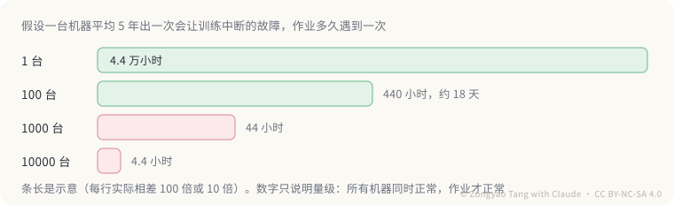
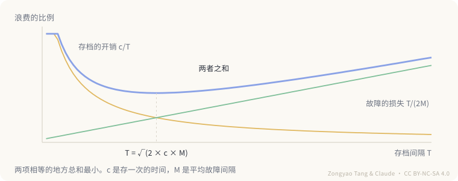

线索是：先算一笔账，为什么规模大了故障就不再是意外 → 应对的办法是定期存档，存档里必须包含哪些东西 → 存得太勤浪费时间，存得太少丢得多，中间有一个最优的间隔 → 模型分散在很多张卡上时，存档本身也要并行，而且不能让训练停下来等 → 最后回到管道的最前端：数据量大到一定程度，读数据的方式也要变。这一单元的内容不“酷”，但一次几周的训练能不能跑完，取决于它。
第 7 部分 · 分布式训练7.4 检查点、容错与大规模数据读取
这一单元回答训练要跑几周，机器一定会坏。怎样让一次故障只损失几分钟？
承接 7.1–7.3：前面讲怎样让很多张卡一起算，这一单元讲怎样让它们连续算上几周。
- 规模越大，故障越是常态：单台可靠，乘以几千台就不可靠了
- 检查点里要存四样：模型、优化器、进度、随机状态
- 多久存一次：存的代价和丢的代价之间的平衡
- 分布式的检查点：每个进程各存各的，而且不让训练停下来等
- 大规模数据读取：把海量小文件打包成分片，顺序地读
讲解
1规模越大，故障越是常态：单台可靠，乘以几千台就不可靠了
一张 GPU、一台服务器出故障的概率很低，可能几年才一次。但同步训练要求所有机器同时正常。一千台机器里任何一台出问题，整个作业都要停。作业的平均无故障时间，大约是单台的平均无故障时间除以机器的台数。
算一笔账。 假设一台服务器（连同它的 GPU、内存、网卡、电源）平均 5 年出一次会让训练中断的故障。5 年约 4.4 万小时。
- 1 台：平均 4.4 万小时一次。跑两周的训练，几乎不会遇到。
- 100 台：平均 440 小时，约 18 天一次。两周的训练，多半会遇到一次。
- 1000 台：平均 44 小时。两周里会遇到七八次。
- 10000 台：平均 4.4 小时。一天好几次。

同一个假设下，规模每大一级，间隔就短一级 （这些数字是为了说明量级。实际的故障率各家集群不同，新机器上线初期和老旧之后都会更高。）
为什么是“除以台数”。 7.1 讲过，同步训练每一步都要所有进程参与集合通信。任何一个进程没了，其他进程就卡在下一次 all-reduce 上。所以作业正常运行的条件是“所有机器同时正常”，它的故障率是所有机器故障率之和。
会出什么故障。
- 硬件：GPU 的显存出现不可纠正的错误、GPU 从总线上掉线、NVLink 或网卡链路出错（5.1 的 Xid、5.2 的计数器）、电源和散热问题。
- 软件：驱动崩溃、某个进程因为显存不足被杀、存储或网络短暂不可用导致读数据或写检查点失败。
- 调度：集群为了维护或者让位给更高优先级的作业，把你的作业抢占了（第 8 部分）。从训练程序的角度，这和故障没有区别。
还有一类更麻烦的：不报错的故障。 硬件偶尔会算出错误的结果而不报任何错。它不会让作业停下，而是悄悄污染训练。表现可能是损失突然出现尖峰或 NaN。防范它靠的是监控（1.3 讲的损失和梯度范数曲线），以及出现异常时能退回到之前的检查点。
这改变了系统的设计目标。 在小规模上，目标是“不出故障”。在大规模上，这个目标不现实，换成了“出了故障损失很小、恢复很快”。后面几节都是围绕它展开的。
Epoch AI 的那篇文章做了更细的估算，结论是：只要检查点做得好，故障造成的损失可以控制在很小的比例，不会成为扩大规模的障碍。下一步就看“做得好”具体指什么。
打个比方像一串节日彩灯，早期的那种串联的：一个灯泡坏了，整串都不亮。每个灯泡能亮一万小时，一千个串在一起，平均十个小时就会灭一次。
所以在大规模训练里，故障不是“万一”，而是日程表上的常规事件。系统必须按“它一定会发生，而且经常发生”来设计：自动发现、自动恢复、每次损失尽量少。
- 应对故障的基本办法只有一个：定期把训练的状态存下来。先看“状态”到底包括什么。
2检查点里要存四样：模型、优化器、进度、随机状态
要让训练从中断的地方准确地继续，光存模型参数不够。还要存：优化器的状态（Adam 的两份统计量、当前的学习率位置）；训练进度（第几步、数据读到了哪里）；随机数发生器的状态。缺了哪一样，恢复后的训练都会和不中断时不一样。
一、模型参数。 不言自明。混合精度训练时要存的是 32 位的主副本（7.2）。
二、优化器状态。 1.2 讲过，Adam 为每个参数维护一阶矩和二阶矩，它们是训练过程中慢慢积累起来的统计量。不存它们，恢复后优化器从零开始积累，头几百步的更新方向和步长都不对，相当于训练中途又来了一次没有预热的冷启动。损失曲线上会出现一个明显的尖峰，之后要一段时间才能恢复。
这也是检查点比“模型文件”大得多的原因：按 7.2 的算法，优化器状态是参数的两到三倍。
三、训练进度。
- 当前是第几步。学习率调度（1.3 的预热和衰减）是按步数算的。步数错了，学习率就错了。
- 数据读到了哪里。否则恢复后要么重复学一部分数据，要么漏掉一部分。对打乱过的数据，要能恢复出同样的顺序并跳到同样的位置。
- 混合精度的损失缩放系数（2.6）、指数滑动平均的参数副本等，如果用了的话。
四、随机状态。 数据的打乱、dropout、数据增强都用到随机数。存下随机数发生器的状态，恢复后才能产生和不中断时相同的随机序列。这一项对“能不能继续训练”不是必需的，但对“能不能复现”是必需的：出了问题想回到某一步重现当时的情况，就靠它。
五、配置和元信息。 模型的结构参数、训练的超参数、代码的版本。几周之后再来看一个检查点，没有这些就不知道它是怎么来的。
怎样检验恢复是对的。
- 在第 1000 步存一个检查点。
- 实验 A：不中断，继续跑到第 1200 步。
- 实验 B：从检查点恢复，跑到第 1200 步。
- 比较两者的损失曲线。完全重合最好；如果只是很接近（差别在浮点误差的量级），通常是某些运算在 GPU 上本身不是逐位确定的，可以接受；如果恢复后有明显的跳变，说明漏存了什么。
这个测试应该在训练正式开始之前做一次。等到真的出了故障才发现检查点不完整，就晚了。
保留几个。 不要只留最新的一个：写到一半时机器坏了，这一个可能是残缺的。也不要全留：每个都很大。常见的做法是保留最近的两三个，再每隔很长的间隔永久保留一个。写的时候先写到临时文件，写完再改名，保证任何时刻磁盘上都有至少一个完整的。
打个比方像游戏存档：只记下角色的等级不够，还要记下背包里的东西、任务进行到哪一步、地图上的位置。否则读档之后，你是一个满级却两手空空、站在出生点的角色。
所以“能加载、能继续跑”不等于“恢复对了”。检验的办法是：存一次档，分别“继续跑”和“读档后跑”同样的步数，两条损失曲线应该重合。
- 知道了要存什么。接下来是一个很实际的问题：多久存一次。
3多久存一次：存的代价和丢的代价之间的平衡
存得越勤，每次故障丢掉的进度越少，但花在存档上的时间越多。存得越稀，正相反。总的浪费最小的间隔，大约是“2 × 存一次的时间 × 平均故障间隔”的平方根。存一次要 1 分钟、平均 10 小时出一次故障时，大约每半小时存一次。
两种浪费。 设每隔 T 时间存一次，存一次要花 c 时间，作业平均每 M 时间出一次故障。
- *存档的开销。* 每 T 时间里有 c 用来存档（假设存档时训练要停）。浪费的比例是 c ÷ T。T 越大，这一项越小。
- *故障的损失。* 故障发生时，上次存档之后的工作全部作废。平均而言故障发生在两次存档的正中间，所以每次损失 T ÷ 2。每 M 时间一次，浪费的比例是 T ÷ (2M)。T 越大，这一项越大。
总浪费 = c/T + T/(2M)。一项随 T 减小，一项随 T 增大。两项相等时总和最小，解出来：
T = √(2 × c × M)
这是高性能计算领域一个很老的结论。此时的总浪费比例约为 √(2c/M)。

存得太勤和存得太疏都浪费 代入几组数。
存一次 c 平均故障间隔 M 最优间隔 T 总浪费 1 分钟 40 小时 约 70 分钟 约 3% 1 分钟 4 小时 约 22 分钟 约 9% 5 分钟 4 小时 约 49 分钟 约 20% 10 秒 4 小时 约 9 分钟 约 4% 从表里读出的三件事。
- 规模扩大十倍，M 缩小到十分之一（上一节），间隔应该缩短到原来的三分之一左右，而不是十分之一。
- 故障频繁时，存档的速度变得非常关键。第三行：存一次 5 分钟，五分之一的时间被浪费掉。第四行：把存档压到 10 秒，浪费回到 4%。所以大规模训练会在“让检查点更快”上花很多工程力气（下一节）。
- 只要 c 远小于 M，浪费就是可控的。这是 Epoch AI 那篇文章的核心论点：硬件故障不会成为规模的硬上限，前提是检查点够快。
公式里没有的因素。
- 恢复的时间。故障后要重新调度、启动进程、加载检查点、重新编译模型（2.5）、NCCL 重新初始化（6.2），可能要十几分钟。这是每次故障的固定损失，和间隔无关，但要算进总账。
- 如果存档不阻塞训练（异步，下一节），c 就接近于零，可以存得很勤。
- 被抢占通常会提前收到通知（第 8 部分）。收到通知时立刻存一次档，这一类“故障”几乎不丢进度。
实际怎么做。 量出你的 c（存一次要多久）；向管理集群的人了解 M 的量级，或者从自己作业的历史里统计；按公式算一个起点。间隔通常按步数设置，把时间换算成步数即可。
打个比方像写长文档时按保存键：每打一个字就存一次，时间都花在存盘上；写一整天才存一次，一停电全没了。合适的频率取决于存一次有多麻烦、以及多久停一次电。
所以检查点的间隔不该是一个随手写的数。它取决于两个可以量出来的量。规模变大后故障更频繁，间隔就要缩短；而要缩短间隔又不浪费，就得让存档本身更快。
- 上一节的结论是：存档越快越好。在分布式训练里，“快”要靠两个办法。
4分布式的检查点：每个进程各存各的，而且不让训练停下来等
模型用 FSDP 分散在很多张卡上时，没有哪一个进程拥有完整的参数。把它们收集到一处再保存，既慢又可能放不下。更好的做法是每个进程把自己那一份直接写成一个文件，所有进程同时写；并且先把数据从显存拷到主内存，训练立刻继续，由后台线程慢慢写盘。
朴素的做法及其问题。 让 0 号进程负责保存：先用 all-gather 把所有参数和优化器状态收集到它那里，再写成一个文件。
- 7.2 讲过，用 FSDP 正是因为一张卡放不下完整的模型状态。收集到一处可能直接显存不足，放到主内存里也可能不够。
- 一个进程顺序地写一个巨大的文件，速度受单个写入流的限制。几百 GB 的检查点要写很久。
- 这期间其他所有进程都在等。
办法一：并行地写。 每个进程只保存自己持有的那一份分片，各写各的文件；另有一小份元数据，记录“完整的张量是怎样切分的、每一片在哪个文件里”。
- 写入的总带宽随进程数增加（只要存储系统撑得住，这通常要求并行文件系统或对象存储）。
- 没有收集的步骤，不需要额外的显存。
- 加载时可以按另一种切分方式读回来：用 64 张卡存的检查点，可以在 128 张卡上恢复，每个进程根据元数据只读自己需要的那些片段。这在需要更换规模、或者从训练转到评估时很有用。
PyTorch 的分布式检查点（
torch.distributed.checkpoint）就是这样做的，TorchTitan 的论文里有一节讲它。办法二：异步地写。 写盘慢，是因为存储比显存和主内存慢几个量级（0.3）。但训练需要被“冻结”的，只是把状态拷出来的那一瞬间：
- 训练暂停。
- 把要保存的张量从显存拷到主内存。这一步的速度是 PCIe 的量级（5.1），几十 GB 也只要几秒。
- 训练继续。
- 后台线程把主内存里的这份副本写到存储上，花多久都不影响训练。
于是上一节公式里的 c，从“写盘的时间”变成了“显存到主内存的拷贝时间”，小了一两个量级。TorchTitan 报告他们用这种方式让检查点的开销降到了很低。
这是 0.1 里“用别的活把等待填满”的又一个例子：慢的 IO 被挪到了后台，和训练的计算重叠。代价也是一样的模式：要多占一份主内存来放那份副本；并且如果上一次还没写完、下一次又到了，就得等或者跳过。
一致性。 所有进程必须保存“同一步”的状态。同步训练里这很自然：大家在同一步的边界上一起暂停。要小心的是不要在一步的中间（比如参数更新了一半）去存。
存储成了瓶颈。 所有进程同时写，瞬时的写入量很大。如果存储系统的带宽不够，或者它和读训练数据走的是同一条前端网络（5.3），存档时可能会拖慢数据读取。时间线上表现为每隔固定的步数出现一次吞吐下降。0.2 讲过：周期很长的规律性波动，先看是不是在存检查点。
打个比方像一个大公司做年终归档：不是让所有部门把文件送到总部由一个人整理，而是每个部门把自己的装箱、贴上统一的标签，各自送去仓库。装箱时只占用几分钟，之后各部门照常工作，搬运由后勤来做。
所以检查点的时间可以从“和模型大小成正比”降到“和每张卡上那一份的大小成正比”，再通过异步把对训练的打扰降到一次显存到主内存的拷贝。
- 最后回到管道的最前端。数据量大到一定程度，2.4 讲的办法就不够了。
5大规模数据读取：把海量小文件打包成分片，顺序地读
训练数据有几亿个样本时，一个样本一个文件的存法行不通：光是打开文件的开销就压垮了存储系统，随机读取也发挥不出存储的带宽。通行的做法是把样本打包成几千到几万个大的“分片”文件，每个分片内顺序读；打乱分两级：先打乱分片的顺序，再在一个缓冲区里打乱样本。
小文件的问题。 2.4 的 Dataset 是按编号取样本的：
dataset[i]去打开第 i 个文件。数据在本地硬盘上、样本数不多时没问题。到了几亿个文件、放在网络存储上：- 每打开一个文件都要先向存储系统查询它的位置（元数据操作）。这个操作比读数据本身还慢，而且存储系统的元数据服务很容易被打满。
- 随机读取一个个小文件，每次都有固定的往返延迟（0.3），存储的带宽根本用不上。
- 打乱顺序意味着每一次读取都是随机的，上面两条每个样本都要付一次。
打包成分片。 把样本按顺序写进一些大文件，每个文件几百 MB 到几 GB，包含几千到几万个样本。格式可以很简单，比如 tar 包，或者一条条记录首尾相接的二进制文件。
- 打开文件的次数少了几个数量级。
- 一个分片是从头到尾顺序读的，存储可以全速输出，系统的预读也能起作用。
- 对象存储（云上最便宜的那种存储）只擅长“整个对象顺序读”，分片正好合它的脾气。
这是 0.1 里“成批处理，摊薄固定成本”在存储上的样子：每次访问的固定成本很高，就让每次访问多拿一些。
打乱怎么办。 顺序读意味着同一个分片里的样本总是挨在一起出现。用两级打乱来近似真正的随机：
- 每一轮开始时，打乱分片的顺序。
- 读出来的样本先进一个缓冲区（比如容纳一万个样本），每次从缓冲区里随机取一个送出去，再读一个新的补进来。
这不是严格的均匀打乱，但缓冲区够大、分片够多时，效果足够好。前提是打包之前数据已经整体打乱过一次，否则同一个分片里全是相似的样本（1.3 提到过：损失曲线出现周期性的起伏，常常是打乱不够）。
怎样分给各个进程。 按分片分：
- 多卡之间：每个训练进程拿到互不重叠的一组分片。
- 同一个训练进程的多个 worker 之间（2.4）：再把这组分片分给各个 worker。
所以分片的个数要远多于“卡数 × 每卡的 worker 数”，否则分不匀。这里有一个常见的错误：忘了在 worker 之间切分，结果每个 worker 都从头读同样的数据，模型把每个样本看了好多遍。
和检查点的关系。 上上节说检查点要记下“数据读到了哪里”。流式读取时，这个位置是“分片的顺序 + 每个进程读到了第几个分片的第几条 + 缓冲区里还剩什么”。完全精确地恢复比较麻烦，很多系统只恢复到分片这一级，接受少量样本的重复或遗漏。
语言模型的情况更简单。 2.4 讲过，文本提前分好词后就是一些很大的整数数组，本身就是“分片”。每个进程从自己那几个文件里取连续的片段即可。上面这套办法主要是为图像、视频、音频这类“样本是独立的小文件”的数据准备的。
打个比方像搬一整个图书馆的书：一本一本地找、一本一本地搬，绝大部分时间花在找书上。把书按箱装好，一次搬一箱，快得多。代价是你不能随手抽出任意一本，只能先开一箱。
所以数据规模上去之后，“随机访问任意一个样本”这个假设要放弃，换成“顺序读分片”。2.4 讲的 Dataset 也从“按编号取样本”的形式换成了“不断产出样本的流”。
承接 分布式的检查点：每个进程各存各的，而且不让训练停下来等最省事的优化：能提前做的预处理，就不要留到训练时做一个 batch 的诞生：采样、取样本、拼 batch、锁页、上 GPU存储层次：数据每远一层，就慢一到三个数量级五个思想会在每一层反复出现后面会用到 数据、检查点和配置怎样进到容器里
串起来
机器越多，故障越频繁：单台的可靠性再高，乘以几千台也会变成每天好几次。检查点要存模型、优化器状态、训练进度和随机状态，缺一样就不能准确地接着训。存的间隔取“存一次的代价”和“平均故障间隔”的几何平均量级。分布式训练里每个进程各存各的分片，并且异步写盘。海量数据要打包成分片顺序读，按分片打乱。
考考自己
不看讲解，用自己的话讲一遍。
- 为什么机器数量增加后，训练作业遇到故障的频率会大幅上升？
- 一个完整的训练检查点应该包含哪些内容？只保存模型参数会有什么问题？
- 检查点的最优间隔由哪两个量决定？作业规模扩大后，间隔应该怎样调整？
- 分布式训练里，为什么不应该把所有参数收集到一个进程再保存？异步检查点是怎样减少对训练的影响的？
- 为什么大规模训练要把数据打包成分片？分片之后怎样实现打乱，多个进程和多张卡怎样分配数据？
术语
- checkpoint
- 检查点
- fault tolerance
- 容错
- MTBF
- 平均无故障时间
- shard
- 分片
- resume
- 恢复训练
- asynchronous checkpointing
- 异步检查点